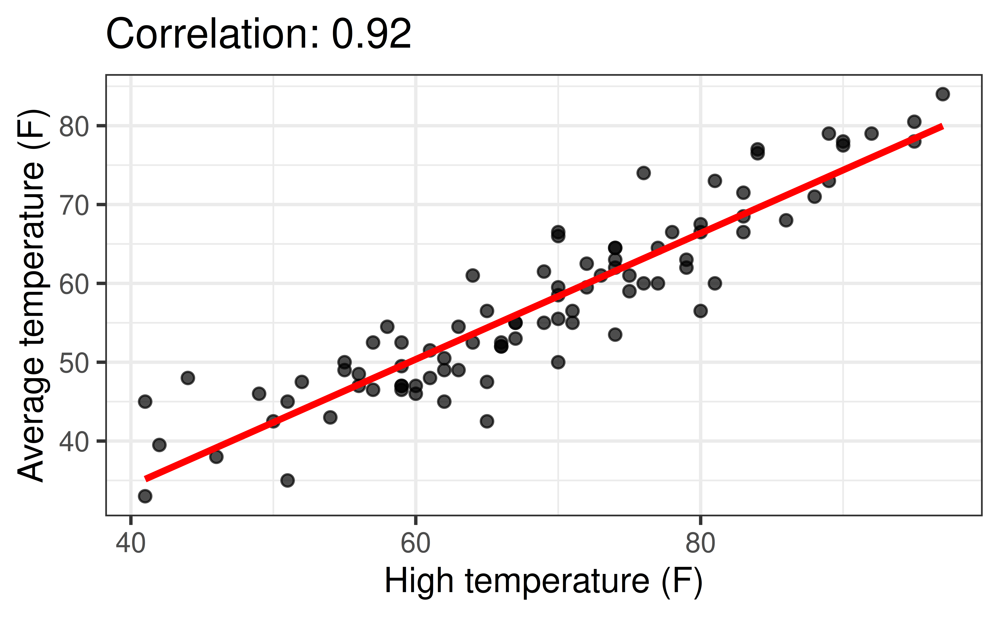
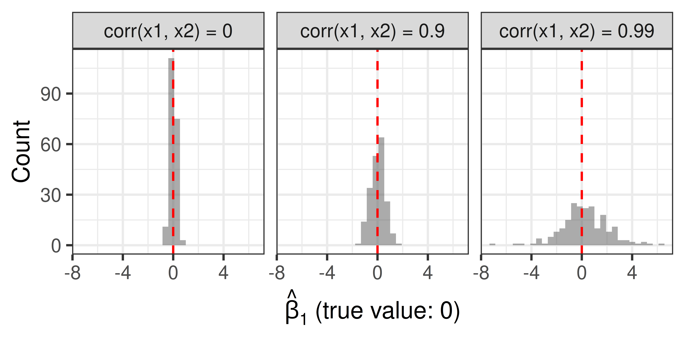

Rows: 90
Columns: 7
$ volume <dbl> 501, 419, 397, 385, 200, 375, 417, 629, 533, 547, 432, 418,…
$ hightemp <dbl> 83, 73, 74, 95, 44, 69, 66, 66, 80, 79, 78, 65, 41, 59, 50,…
$ avgtemp <dbl> 66.5, 61.0, 63.0, 78.0, 48.0, 61.5, 52.5, 52.0, 67.5, 62.0,…
$ season <chr> "Summer", "Summer", "Spring", "Summer", "Spring", "Spring",…
$ cloudcover <dbl> 7.6, 6.3, 7.5, 2.6, 10.0, 6.6, 2.4, 0.0, 3.8, 4.1, 8.5, 7.2…
$ precip <dbl> 0.00, 0.29, 0.32, 0.00, 0.14, 0.02, 0.00, 0.00, 0.00, 0.00,…
$ day_type <chr> "Weekday", "Weekday", "Weekday", "Weekend", "Weekday", "Wee…Multicollinearity
When predictors overlap
Prof. Eric Friedlander
Topics
- What multicollinearity is, and why it is a problem
- Detecting it: plots, correlations, and the variance inflation factor (VIF)
- What to do about it
Data: rail_trail
Daily volume of users on a rail trail in Massachusetts over 90 days in 2005 (Pioneer Valley Planning Commission), with weather and calendar variables.
A puzzle
One predictor
| term | estimate | std.error | statistic | p.value |
|---|---|---|---|---|
| (Intercept) | -17.08 | 59.40 | -0.29 | 0.77 |
| hightemp | 5.70 | 0.85 | 6.72 | 0.00 |
Each additional degree of high temperature is associated with about 5.7 more riders, and the standard error is 0.85.
Add the average temperature
| term | estimate | std.error | statistic | p.value |
|---|---|---|---|---|
| (Intercept) | 1.67 | 56.42 | 0.03 | 0.98 |
| hightemp | 12.06 | 2.04 | 5.91 | 0.00 |
| avgtemp | -7.94 | 2.35 | -3.39 | 0.00 |
What changed for hightemp? What does the coefficient on avgtemp seem to say: do warmer average days mean fewer riders?
- The
hightempestimate more than doubled, and its standard error went from 0.85 to 2.04 avgtemphas a negative coefficient, even though warmer days clearly bring more riders
What is going on?

hightemp and avgtemp carry nearly the same information. This is multicollinearity.
What is multicollinearity?
Definition
Multicollinearity is when one or more predictors are strongly related to some combination of the other predictors.
Test of intuition: if you could fit a good linear model with one predictor as the response and the other predictors as the explanatory variables, then your predictors are exhibiting multicollinearity.
The extreme case
Suppose the truth is \(y = 3 + 4x\), and we fit a model with \(x\) and \(z = x/10\):
\[ \begin{aligned}\hat{y}&= \hat{\beta}_0 + \hat{\beta}_1x + \hat{\beta}_2z\\ &= \hat{\beta}_0 + \hat{\beta}_1x + \hat{\beta}_2\frac{x}{10}\\ &= \hat{\beta}_0 + \bigg(\hat{\beta}_1 + \frac{\hat{\beta}_2}{10}\bigg)x \end{aligned} \]
- Any \(\hat\beta_1\) and \(\hat\beta_2\) with \(\hat{\beta}_1 + \frac{\hat{\beta}_2}{10} = 4\) give exactly the same predictions
- So the data cannot tell us which pair is “best”: the model is unidentifiable, and R will give
NAfor one coefficient - This is also why a categorical variable needs a reference level: the indicators for all levels always add up to 1, which is perfectly collinear with the intercept
Real data are almost never perfectly collinear. What do you think happens when predictors are nearly collinear?
Highly correlated predictors: a wobbly plane
X1 and X2 are highly correlated (\(r = 0.95\)). The truth: Y depends on X2 only (true X1 slope = 0).
Click New noise several times (you can also rotate the plot). What does the plane do? How far does the X1 slope stray from 0?
Uncorrelated predictors: a steady plane
Same X1, same noise, same truth, but now X1 and X2 are uncorrelated (\(r = 0\)).
Click New noise several times. Compare with the last slide: why does the plane wobble so much less?
When the predictors move together, the data cover only a thin strip of the \((X_1, X_2)\) floor. The plane is pinned down along the strip but free to tilt across it, so the individual slopes are poorly determined, even though predictions on the strip stay good.
Nearly collinear: the coefficients wobble
Here is the same idea over many samples. Each simulated study below has the same true model, \(y = 2 + 0 \cdot x_1 + 1 \cdot x_2 + \text{noise}\), but a different correlation between \(x_1\) and \(x_2\). We fit 200 samples of \(n = 40\) for each.

The estimates are still centered at the truth, but the more correlated the predictors, the more they vary from sample to sample. That is exactly a larger standard error.
Why it matters
Consequences
- Standard errors inflate: wide intervals, small \(t\)-statistics, large p-values, even for variables that are truly related to \(y\)
- Estimates are unstable: a small change in the data can swing a coefficient a lot, even flip its sign
- Interpretation breaks down: “holding
avgtempconstant, a 1 degree increase inhightemp…” describes a day that basically does not exist
What multicollinearity does not hurt: the model’s predictions and \(R^2\). If you only care about predicting \(y\), it is mostly harmless. It is a problem when you want to interpret or test individual coefficients, which is what most of our projects do.
Detecting multicollinearity
In the exploratory analysis
- Look at the correlations among the predictors. Values near \(\pm 1\) (rule of thumb: above \(|0.8|\) or \(|0.9|\)) are a warning sign.
- Look at scatterplots of pairs of quantitative predictors. A tight linear band is a warning sign.
- For categorical predictors, look at boxplots or tables of one predictor against another.
Pairwise checks can miss it
A predictor can be nearly predictable from a combination of several others, even if no single pair is highly correlated. We need a number that captures “how well do all the other predictors predict this one?”
Variance inflation factor (VIF)
For predictor \(x_j\), regress it on all the other predictors, and let \(R^2_j\) be the proportion of the variation in \(x_j\) that they explain. Then
\[VIF_j = \frac{1}{1 - R^2_j}\]
- \(R_j^2 = 0\) (no overlap) \(\Rightarrow\) \(VIF = 1\)
- \(R_j^2 = 0.9\) \(\Rightarrow\) \(VIF = 10\)
- Interpretation: the variance of \(\hat\beta_j\) is inflated by a factor of \(VIF_j\) (its standard error by \(\sqrt{VIF_j}\))
- Rules of thumb: \(VIF > 5\) deserves a look, \(VIF > 10\) is concerning
Computing VIF
The vif() function from the car package computes the VIF of every predictor in a model at once:
So the standard error of \(\hat\beta_{hightemp}\) is inflated by roughly \(\sqrt{6.5} \approx 2.5\), which is about what we saw: 0.85 \(\to\) 2.04.
Why are the VIFs of hightemp and avgtemp identical here?
With only two predictors, both VIFs are \(1/(1 - r^2)\), where \(r\) is the correlation between them. With more predictors, each has its own.
VIFs for a bigger model
GVIF Df GVIF^(1/(2*Df))
hightemp 10.259978 1 3.203120
avgtemp 13.086175 1 3.617482
season 3.207204 2 1.338233
cloudcover 1.587485 1 1.259954
precip 1.295352 1 1.138135
day_type 1.125741 1 1.061009Which predictors are worth worrying about? Which are not? What would you do?
hightempandavgtempare the correlated pairseasonmay be somewhat inflated too, because season is tied to temperaturecloudcover,precip, andday_typeare fine- Because
seasonandday_typeare categorical,vif()reports a generalized VIF: see the next slide
Generalized VIF (GVIF)
A categorical predictor with \(k\) levels enters the model as \(k - 1\) indicator variables. Those indicators are correlated with each other by construction, so judging each one’s VIF separately is misleading (it depends on which level you chose as the reference). Instead, we ask about the whole predictor at once.
- GVIF: how much the uncertainty about all of a predictor’s coefficients, taken together, is inflated by correlation with the other predictors. For a quantitative predictor (
Df = 1) it is exactly the ordinary VIF. Df: the number of coefficients the predictor uses (\(k - 1\) for a categorical predictor).- \(GVIF^{1/(2 \cdot Df)}\): GVIF rescaled so that predictors with different
Dfcan be compared. It lives on the standard error scale: it says how many times larger the standard errors are, roughly, than with uncorrelated predictors.
How to interpret and decide
- Compare \(GVIF^{1/(2 \cdot Df)}\) to \(\sqrt{5} \approx 2.2\) (worth a look) and \(\sqrt{10} \approx 3.2\) (concerning). These are the usual VIF cutoffs of 5 and 10, put on the same scale.
- Below the cutoffs: no action needed, move on.
- Above them: first ask whether the inflation matters for your goal. If you only want predictions, it usually does not. If you want to interpret or test that predictor’s effect, wide intervals and unstable coefficients are a real problem.
- If it matters, your options: drop or combine redundant predictors, collect more varied data, or keep the model and say honestly that the effects cannot be separated.
- Never drop a predictor just because of a VIF if the research question needs it.
Note
Two caveats. (1) A model with an interaction or squared term will show large VIFs for the terms involved, because \(x\) and \(x^2\) (or \(x\) and \(x \cdot z\)) are naturally related. That is expected, and usually not a reason to drop them. (2) Do not apply the VIF cutoffs to dummy variables of a categorical predictor one at a time: that is why vif() gives one generalized VIF per term.
Categorical predictors and study design
Categorical predictors too
Multicollinearity is not only about two numbers:
- A categorical predictor can be tied to another (e.g. an Islander’s
villageand theiroccupation): check with a two-way table or a boxplot - A categorical predictor can be tied to a quantitative one (e.g.
seasonandhightemp: summer days are hot)
In your Islands study, if you randomly assigned the primary explanatory variable, should it be related to the demographic variables? What if your study is observational?
Randomization breaks the link between the treatment and everything else, so multicollinearity between the treatment and the other variables should be small. In an observational study they are often tangled together, which is exactly what makes it hard to separate their effects.
What to do
Options
- Drop one of the redundant predictors and refit.
- Example: keep
hightemp, dropavgtemp.
- Example: keep
- Combine the redundant predictors into one.
- Example: a single
temp_compositethat is the average ofavgtempandhightemp.
- Example: a single
- Keep both, but don’t interpret them individually. If you care about the pair, test them together with an \(F\)-test (Lecture 20) instead of one at a time.
Which option would you pick if your research question is “how does temperature affect ridership?” Would your answer change if the question were “does the high temperature matter beyond the average temperature?”
Do not panic
- If your primary variable is not involved in the multicollinearity, you can leave it alone: the standard error you care about is not inflated
- Control variables included on purpose (confounders) can be highly related to your primary variable, and that is fine, as long as your primary variable’s interval is still informative
- Always report what you found: “VIFs were all below 3” is a one-line sentence in a Methods section
Activity: HW 11, Part 2
📋 HW 11 - Conditions and Multicollinearity
Use the model you checked on Monday. Work on Part 2: look at how your explanatory variables relate to each other, compare standard errors, compute VIFs, and decide whether multicollinearity is a problem for your project.
Important
Use vif() from the car package (library(car), then vif(your_model)) for the VIF exercise, instead of the prewritten glance() code in the answer box. It gives you the VIF of every predictor in one step. If your model has a categorical predictor, read the generalized VIF column (\(GVIF^{1/(2 \cdot Df)}\)) as described on the previous slides.
Recap
- Multicollinearity: a predictor is strongly related to a combination of the other predictors
- It inflates standard errors, makes estimates unstable, and makes individual coefficients hard to interpret. Predictions are not hurt.
- Detect it with correlations, plots, and \(VIF_j = 1/(1 - R_j^2)\) (worry above 5 to 10)
- Fix it by dropping or combining predictors, or by testing the correlated predictors together and not interpreting them individually